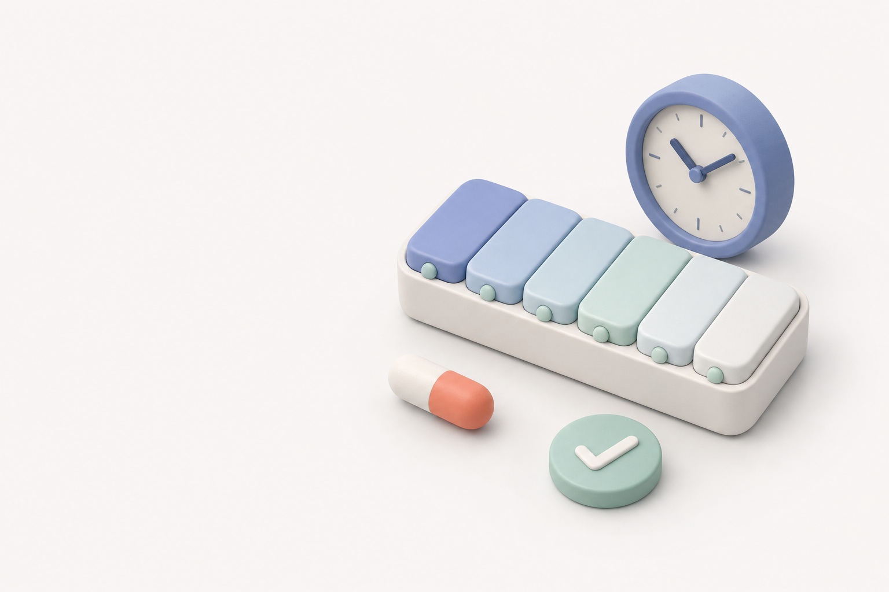
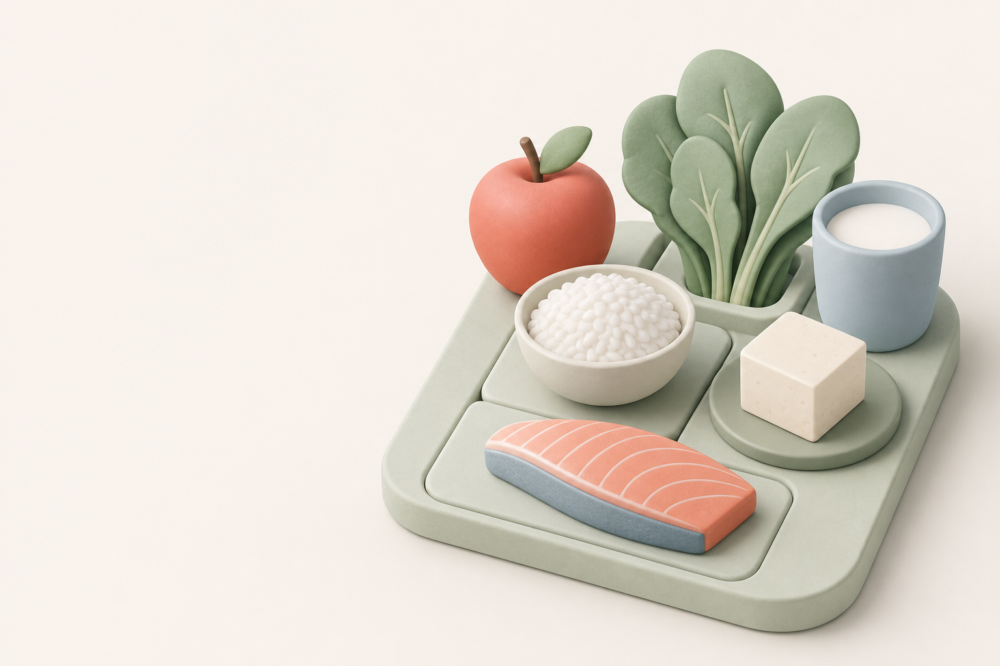

为什么慢性病需要长期管理？
长期管理的目标，是降低波动和未来风险，让生活保持稳定。
来源：NIDDK · 最后复核 2026-07-277月27日 · 星期一
按时间顺序完成今天的用药记录

统一时间线
拍照或从相册选择，按报告日期自动归档
上海市第一人民医院 · 张医生
肝功能、血脂、空腹血糖
甲泼尼龙剂量已更新，历史记录保持不变
消化内科 · 需检查 4 项
餐前选择辅助

糖尿病
可作为水果选择，注意一次食用量。
胆固醇
天然不含胆固醇，可替代高脂零食。
肝脏管理
普通份量通常可选，不宣称治疗作用。
这是保守的通用筛选，不替代医生或营养师建议。正式数据需按具体食物条目核对。
精选权威患者科普
优先政府卫生机构、专业学会指南和患者科普；保留原文链接、发布日期与复核状态。
长期管理的目标，是降低波动和未来风险，让生活保持稳定。
来源：NIDDK · 最后复核 2026-07-27个人资料与本地数据
资料只保存在这台手机